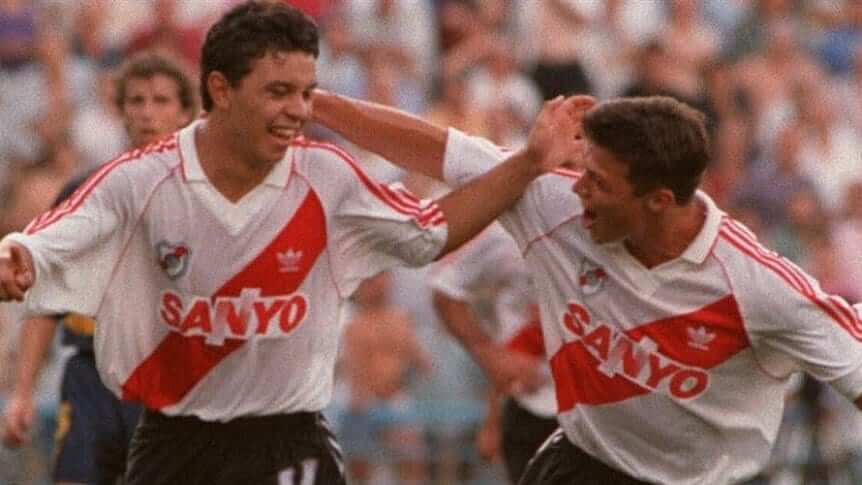

Gallardo debutó en la prenovena de River Plate a los doce años, en 1988, y tres años después en la reserva. El 18 de abril de 1993 debutó en la Primera División en un partido contra Newell s Old Boys que finalizó en una victoria por 2-0. El 11 de diciembre de 1994, Gallardo le anotó su primer gol a Boca Juniors, mediante un penal al minuto 25 del segundo tiempo. El encuentro acabó 3:0 a favor de River. Allí permanecería durante 6 años, la cual fue su primera etapa en el club. Gallardo tuvo otras dos etapas en el club «Millonario» las cuales fueron en 2003-06 y 2009-10 respectivamente. En River se consagró campeón en múltiples ocasiones, sumando en total ocho títulos. Estos fueron los Torneos Apertura de 1993, 1994 (campeón invicto), 1996 y 1997, los Torneo Clausura de 1997 y 2004, la Copa Libertadores de 1996 y la Supercopa Sudamericana de 1997. Se convirtió en uno de los jugadores más queridos por la hinchada riverplatense, destacando por ser figura en varios de los títulos que supo conseguir. Además de ser capitán y referente en varios de los planteles que integró.

Para más información visitar el siguiente enlace ...Leer más.